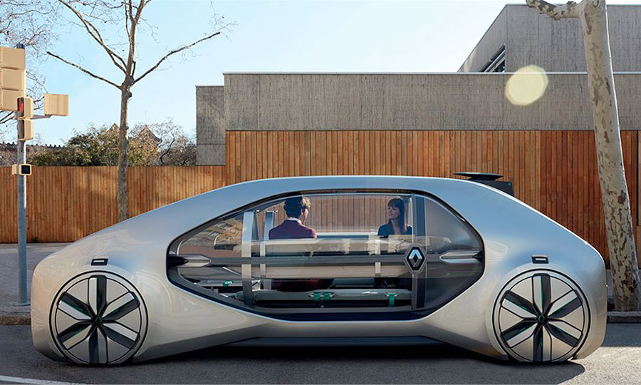

Autonomous Vehicle
What is Autonomated Vehicles
What is an autonomous vehicle? It is a vehicle that can guide itself without human conductions. This advanced technology will be certained to be highly integrated into people's daily lives. There are many autonomous vehicles in the market today however one of the most impressive is the autonomous car. Elon Musk as one of the most influential technological developers of the autonomous vehicle ‘Tesla’ outdo the market with their high capability electric cars.
While their are significant benefits that allow for the autonomous vehicle industry to strive in the future, there are still some current barricades which this industry must overcome. Autonomous cars use various kinds of technologies to allow for it to become what it is today. Some of the technologies incorporated in a self driving car to function is IoT sensors, Iot Connectivity and a good Software Algorithm. IoT Sensors are types of sensors for blind spot monitoring, forward collision warning, radar, camera, and ultrasonic. These work together in allowing for the navigation of the self driving possible. IoT Connectivity is used to access cloud, this function allows the car to act upon traffic data. This technology also allows for weather, maps, adjacent cars and surface conditions to be addressed. This ultimately helps the vehicle monitor their surroundings better and allow the AI to make better and informed decisions. While cars can have the most beneficial technology, it could be wasted if all those technology is incompatible with each other or causing delays due to an unrefined algorithm. All data that is collected needs to be analyzed to determine the best course of action, this is the main function of the control algorithms and software. This is the most complex and crucial part of the autonomous vehicle as these can vary to how fast the car can respond and the way it responds to the situation. If the system is flawed, it could cause a major fatal accident. The most famous autonomous vehicles in the market today is the one developed by Elon Musk ‘Tesla’ and the ones developed from google. While they work with the same concept they have significant different variations to how to process through the data from the differentiation in technology.
Tesla works by analyzing their environment using a software system called “Autopilot”, this system uses high-tech cameras to view and collect data surrounding the car, this is similar to how we operate cars. This sophisticated system is called “computer vision”. This is finalized by the car through the algorithm, and concluding on the best decision for the vehicle. While Tesla vehicles uses high-tech cameras, Google takes a very different approach to its self automated cars. They implement a system using LIDAR, which is a type or radar however with light instead of radio waves. This system allows for the automated process to proceed. While both type of systems work efficiently, the difference in how they work is very significant, meaning automated vehicles is still however new and they have not come to a final conclusion to what system is best suited for the car.
While autonomous vehicles may seem like the most convenient way of transport in the distant future, there a still controversy of its capabilities. One of its main controversy is of the ethics of the AI, in determining an action where a dilemma is placed. This could be to either hit an older lady or 2 children, this dilemma has caused a divide society of its acceptance, there are also series of accidents through self driving cars which arouse doubt in its capabilities.
Possibly within the next 3 years, automated vehicles have been refined to the point that its technologies comprehend the environment better, refining what is flawed today.
What would be the impact of Automated vehicles
If we continue to stay on course with the development of autonomous vehicles, many of car companies will have to adapt to this change and if not, risking to be outdated and bankruptcy, meaning they have to implement their own unique type to create variation. It’s estimated that in 20 years, 2040, out of 10 cars there would be 4 that is automated. If automated cars would become fully automated, meaning there would no need to be supervision of the car, users will become more productive, allowing for them have the time where they would be behind the wheel driving to catch up on life.
This will highly encourage road trips since you're not confined to the wheel at all times. The implementation of full autonomous Vehicles is proven “safer” however for the few accidents that were to occur will create bigger headlines and create divide. Some drivers may be threatened on the road, knowing they are driving along the sides of full automated vehicles on the road without the supervision of any human, putting unnecessary pressure on the driver, causing the driver to be extremely cautious of their actions.
Automated vehicles will have an impact on navigation apps such as google maps, the implementation of automated vehicles will cause the navigation through these apps to become obsolete, making these apps less popular and profitable. Automated vehicles will highly impact truck drivers, the investment of an automated truck will eliminate harsh labour cost and increase productivity, substituting for the time where the driver will be resting, meaning stocks will arrive sooner and faster.
How will this affect you ?
If Automated vehicles were to be fully integrated into our society today, it will be interesting to see how everyone transition to this phase of the technological development, it won't affect me majorly nor would it affect friends and family differently other than the aspect that there is just automated vehicles on the road, making it more convenient for everyone providing a safer space. One major factor that will be different for me is that i am able to do whatever i want if i'm behind the wheel if the vehicle is fully automated without the supervision of myself. Meaning im able to catch up on possible homework or work related to job, this will increase my productivity significantly due to things like the often congestions on the road.
References
https://www.iotforall.com/how-do-self-driving-cars-work/
https://www.ucsusa.org/clean-vehicles/how-self-driving-cars-work
http://theconversation.com/a-users-guide-to-self-driving-cars-114899